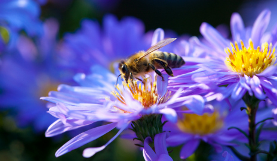

Here are some helpful bugs with some helpful jobs. Bees, Butterflies, Wasps, Moths, and certain types of beetles pollinate which helps both the plants and pollinators populate. These are some plants that are great for the bugs and the garden.Marigolds are good at attracting pollinators with a strong necturescent. They are also good at preventing pests that will try to eat the rest of your garden. Goldenrod flowers are super important for late season pollinators. Bees frequently collect nectar and a lot of it right before winter. Goldenrods are native and may be difficult to find in stores. These flowers are extremely adaptable, very hardy and can even be cut down and regrow. Most insects that visit Goldenrods are Wasps, Soldier Beetles, and most Bees. Lupine attracts Bees and Butterflies, they bloom from spring to summer. There are dozens of varietes which you can find in deserts, to mountain streams, and even on sand dunes. They range from the U.S.A to Canada and extremely overwhelming in the West. They can be tiny annuals or massive perennials, and most produce high quality pollen. They provide great homes for young caterpillars, most wasps, bees, tiny flies, and beetles.
